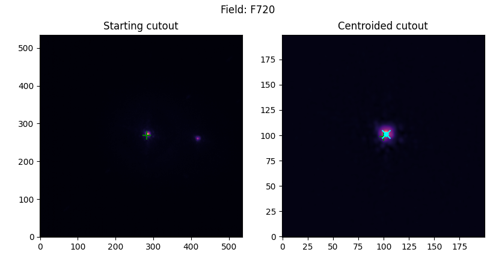

Quick-start guide#
We strive to make the VAMPIRES DPP as automated as possible- the following setup should get you 90% of the way towards successful data reduction, depending on the complexity of your dataset! We assume that you have already successfully installed the vampires_dpp package. If not, see Installation. For help with the command-line interface we recommend using the built-in docstrings (-h/--help) or the documentation.
Multi-processing
The pipeline uses Python multi-processing to help speed-up reductions. You will likely be limited by your computer’s available memory (RAM)- if you spawn too many processes and load too much data in parallel you can run out of memory. Commands with multi-processing enabled have the -j command line flag, which will default to a single process -j1 by default.
When possible, we indicate a command that has multi-processing enabled with the “🚀” emoji. We do not multi-process by default (to avoid awkward out-of-memory errors) so you must opt in to all commands using the -j flag.
In general, multiprocessing does seem to help when not limited by file I/O (e.g., slow hard disk drive), so give it a try!
Tip: multiprocessing and numpy
Internal numpy routines can cause multiprocessing to become much slower. In this case, make sure to set the appropriate environment variables.
export OMP_NUM_THREADS=1
Warning: Large data volume
This pipeline tries to minimize the number of FITS files saved to disk due to the massive volume of VAMPIRES data. To accomplish this, we skip saving intermediate files when possible. Still, you should expect your data volume to increase by a factor of ~2.5. If saving intermediate products, this factor increases to ~6.5 times the raw data size. It is strongly recommended to work with a large attached storage.
Sorting raw data#
After downloading your data, you may want to sort it into subfolders based on the data type and object observed.
Pre-S23A Data types
Data types are not appropriately populated into headers for data taken before the S23A semester. For these data, we will try and parse a file type from the OG filename. In other words, if the VAMPIRES operator took data labeled “darks_*.fits”, we will put that into the darks folder. This automation is ad-hoc and should be verified by a human after sorting.
After downloading your data, you can run dpp sort to automatically sort your data into human-readable folders, ready for further processing.
dpp sort [-j 1] VMPA*.fits
The prescribed folder structure for this sorting is
.
├── ABAUR
│ └── 750-50_em300_00100ms_512x512
├── HD31233
│ └── 750-50_em300_00100ms_512x512
├── darks
│ └── em300_00100ms_512x512
├── flats
│ └── 750-50_em300_00100ms_512x512
├── pinholes
│ └── 750-50_em300_00100ms_512x512
└── skies
└── em300_00100ms_512x512
after sorting this folders can be changed or rearranged as much as you’d like. The configuration for the pipeline is flexible, so you don’t have to sort your files at all if you prefer a different method.
Normalizing data#
There are a few recognized data formats the processing pipeline recognizes. Depending on which data format you have, additional steps may need to be taken to normalize data to prepare it for the pipeline.
Which data needs normalized?
Any EMCCD VAMPIRES format data needs normalized- at minimum it will removed the corrupted detector readout frame and empty frames.
CMOS format#
Any data taken after the June 2023 upgrades has the same format regardless if data is downloaded from the archive or from the SCExAO computers directly. It is assumed that any FLC deinterleaving has been done beforehand, which is expected to be done by the support astronomer.
No further action is required for the CMOS format- dpp norm can be skipped.
EMCCD formats#
These formats are used for VAMPIRES data prior to the June 2023 upgrades. They come in two distinct formats
STARS archive format (default for open-use observers)
Files are given frame id names or standardized archive names, e.g. “VMPA00023445.fits”
Each file corresponds to a single camera, FLC state, and HWP angle
VAMPIRES format
Files have names as set by controller, e.g. “HD141569A_00_750-50_LyotStop_00_cam1.fits”
Each file is a raw cube from the camera, which includes bad readout frame in the first frame
FLC states interleaved in every other frame for PDI mode
If your data is in the STARS format, no further action is needed- dpp norm can be skipped. If your data is in the VAMPIRES format, you’ll need to run dpp norm to run some essential pre-processing steps.
At minimum, you’ll need to discard the initial frames which have readout artifacts. If your data is polarimetric you will also need to deinterleave the files (add the -d flag). This process will also cut out any frames which are all zeros- a common occurrence when aborting exposure sequences before completion.
dpp norm [-j 1] [-d] -o normed 750-50_em300_00100ms_512x512/*.fits
Which data needs deinterleaved?
Not all data needs deinterleaved- calibration files (darks, flats, pinholes, skies, etc.) typically do not need deinterleaved. If you do not plan to do polarimetry (e.g., speckle imaging, ADI-only) you can skip deinterleaving entirely, effectively averaging together data between the two FLC states. If you prefer to model each state separately then deinterleave away.
Quick look and filter#
Before running files through the pipeline, it is recommended to inspect your raw data and discard errant cubes and cubes with poor seeing. Doing this ahead of time saves on processing time and avoids errors.
dpp select <input_files>/*.fits
After this, you can use the filelist as your input, for example
dpp run my_config.toml $(< filelist_select.txt)
Create calibration files#
Next, you’ll want to create your master backgrounds and flats. This can be accomplished in one command using dpp calib.
If you use the prescribed folder structure above, creating your files can be done like so
dpp calib [-j 1] -o master_cals back darks/**/*.fits
dpp calib [-j 1] -o master_cals flat flats/**/*.fits
This will produce a series of calibration files in the master_cals/ folder. We do not combine individual flat or dark frames- instead we match each science file to the closest matching available calibration file.
Set up configuration files#
After your data has been downloaded and sorted, you’ll want to create configuration files for the data you want to process. To get started quickly, we provide templates for common observing scenarios that can be produced interactively with dpp new. In the example below, we are creating a PDI template with the 55 mas Lyot coronagraph.
dpp new 20230101_ABAur.toml
At this point, we highly recommend viewing the configuration options and making adjustments to your TOML file for your object and observation. The processing pipeline is not a panacea- the defaults in the templates are best guesses in ideal situations.
Prepare image centroids estimates#
To allow efficient data analysis we only measure the PSF centroid and statistics in a window around an initial guess of the PSF centroid. Due to the complexity of input data types and observing scenarios we cannot easily prescribe an automated centroiding scheme. We provide tools for quick-looking data and getting precise guesses so that analysis is much more likely to succeed.
Do I need to run centroid?
We recommend running the centroid step as it greatly reduces the chances for errors in image registration. In addition, for coronagraphic data you must run the centroid step to specify which satellite spots to use for analysis. The centroid step is not strictly required for non-coronagraphic data, though- if you do not provide it the center of the frame will be used as the starting estimate, and your analysis window size can be made larger to accommadate misalignment. Nonetheless, we highly recommend this step.
Automated mode#
If the terminal you are connected to has working graphics (i.e., X-forwarding for SSH connections, not inside a tmux sesssion) and you have a copy of matplotlib installed you can run
dpp centroid [-j 1] 20230101_ABAur.toml 750-50_em300_00100ms_512x512/*.fits
Coronagraphic

Non-coronagraphic/Binaries
{kind=link}
Planets

Manual mode#
If you do not have a graphics-ready terminal, or you want to skip the interactive process and use your own methods, we provide a manual method for entering centroids. You will be prompted for the centroid of each PSF- enter the centroid as an x, y comma-separated tuple.
Pro-tip: DS9
If previewing data with DS9, you can copy the x, y coordinates directly after subtracting 1 (because python starts indexing at 0). This allows you to use region centroids or the cross for assistance with manual entry.
Running the pipeline#
After you’ve selected your configuration options, you can run the pipeline from the command line with dpp run
dpp run [-j 1] 20230101_ABAur.toml 750-50_em300_00010ms_512x512/*
Warning: multiprocessing with large data
If the individual data cubes are very large data, you need to avoid multi-processing or you are at risk of running out of memory. This can happen with high framerate MBI data, in particular (e.g. 25 GB uncompressed). Make sure you use the -j flag to limit processes to avoid running out of memory
dpp run -j1 20230101_ABAur.toml 750-50_em300_00010ms_512x512/*
Troubleshooting: debug log
As a first course of action, if you run into errors running the pipeline check the debug.log file for more granular and verbose logging.
Processing steps#
The pipeline will reduce the data in the following order
Calibration
(Optional) background/dark-subtraction, flat-fielding, bad-pixel correction
Flip cam 1 data
Precise coordinate lookup and normalization of FITS headers
Frame combination
Used to collect frames from multiple data files for e.g., polarimetry
Frame analysis
Measure image statistics, centroids, and photometry in windows around the PSF(s)
Measures a few full-frame statistics.
(Optional) frame selection
If desired and there are more than one frame per cube you can discard a quantile of the frames based on a selectable metric
(Optional) image registration
If desired the frames will be co-aligned and centered with a selectable metric
(Optional) Spectrophotometric calibration
Calibrate data with a spectrum or stellar model using a selectable metric for the estimated image flux
(Optional) Coadd data cubes
Combine frames using median, mean, etc
After combining, another round of registration can be enabled to recenter with the higher S/N combined image
(Optional) Create ADI cubes
Concatenate cam1, cam2, and cam1+cam2 collapsed data into cubes along with the derotation angles for ADI analysis
(Optional) Create difference images
Create single- or double-difference images for diagnostic analysis
(Optional) polarimetric differential imaging
Perform double- or triple-differential analysis
(Optional) Mueller-matrix correction and instrumental polarization removal
Polarimetric differential imaging#
If you have polarimetry enabled in your configuration, it will run automatically with dpp run, but if you want to rerun the polarimetric analysis only, you can use
dpp pdi [-j 1] 20230101_ABAur.toml 750-50_em300_00010ms_512x512/*
Pipeline outputs#
The pipeline will save data in a strict folder format (some folders will be missing/empty if they are not specified in the configuration)–
.
├── aux # auxilliary processing configs and data
├── calibrated # calibrated data
├── metrics # NPZ file with metrics for each frame for each file
├── aligned # aligned data
├── coadded # coadded data
├── selected # frame-selected data
├── diff # diagnostic difference images
│ ├── single
│ └── double
├── products # output table
│ └── adi # ADI cubes and angles
└── pdi # PDI outputs
├── mm # mueller-matrices
└── stokes # stokes frames
If you want to experiment with pipeline options, we recommended renaming folders (e.g. collapsed_dft) so that you retain a backup while allowing the pipeline to naturally reprocess the data (see Re-running the pipeline, below).
Re-running the pipeline#
The pipeline is written to use saved, cached data as much as possible to save time. This means, for example, re-running the PDI steps will use the already saved collapsed frames as inputs. Re-running the pipeline, then, will only process files which are missing or which have newer input files. To explain, this means if you delete a collapsed file, for example, and re-run the pipeline, the collapsed data will be reprocessed using the saved metrics (and calibrated data, if saved). Or, in the latter case, if I delete a metric file, the corresponding collapsed file (which depends on the metric file) will be reprocessed.
This behavior can be controlled in two ways- the first is manual management of data by deleting or moving files. To reprocess all the file metrics (becuase you changed an analysis parameter, for example) you can just delete metrics/ (or change its name). The second is through the command line, using the -f/--force flag. With this flag you will be prompted on which pipeline steps to force reprocessing. For example, if I change my centroid and recentering algorithms, I can generate new collapsed frames with
dpp run 20230101_ABAur.toml 750-50_em300_00010ms_512x512/* --force
TODO